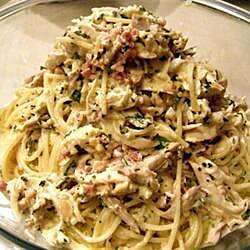

Chicken Carbonara

Description
When you're looking for something comforting and carb-y, nothing fits the bill like a good carbonara.
Not only is it chock full of a creamy sauce and speckled with crispy bacon, but it is a dish that's easy
to cook and you may often find that you have many of the ingredients in your kitchen already.
This version adds a bit of protein by way of sautéed chicken breasts, making it the perfect quick and easy
weeknight dinner. The key to this dish is to not skimp on the seasoning, especially on the chicken. The pepper
will toast slightly on the chicken and add a slight peppery bite that is absolutely unresistable. No fettuccine on
hand? Spaghetti, bucatini, linguine, or capellini would all be great instead. All that truly matters is that you are
able to top it off with a good dusting of freshly gratedparm. Happy slurping!
Ingredients
- 12 oz. fettuccine
- 4 slices bacon
- 3 cloves garlic, minced
- 1/2 lb. boneless skinless chicken breasts, cut into strips
- Kosher salt
- Freshly ground black pepper
- 4 large eggs, beaten
- 3/4 c. freshly grated Parmesan, plus more for garnish
- 1/3 c. freshly chopped parsley, plus more for garnish
Steps
- In a large pot of salted boiling water, cook pasta according to package directions until al dente. Drain, reserving 1/2 cup pasta water, and return to pot.
- Meanwhile, in a large skillet over medium heat, cook bacon 5 minutes. Add garlic and cook until bacon is crispy, 2 to 3 minutes more. Transfer to a bowl and drain half the fat in skillet.
- Add chicken to skillet and increase heat to medium-high. Season generously with salt and pepper and cook, flipping halfway through, until no longer pink, 10 minutes.
- Reduce heat to low and return bacon to skillet. Toss, then add cooked pasta and toss until combined.
- In a small bowl, beat together eggs, Parmesan, and parsley and season with salt and pepper.
- Pour egg mixture over pasta and toss until coated, then add a couple tablespoons pasta water until creamy. (Add more pasta water by the tablespoonful as necessary.)
- Garnish with Parmesan and parsley and serve immediately.
Discover more delicious recipes on A Couple Cooks. The Number one recipe site online.